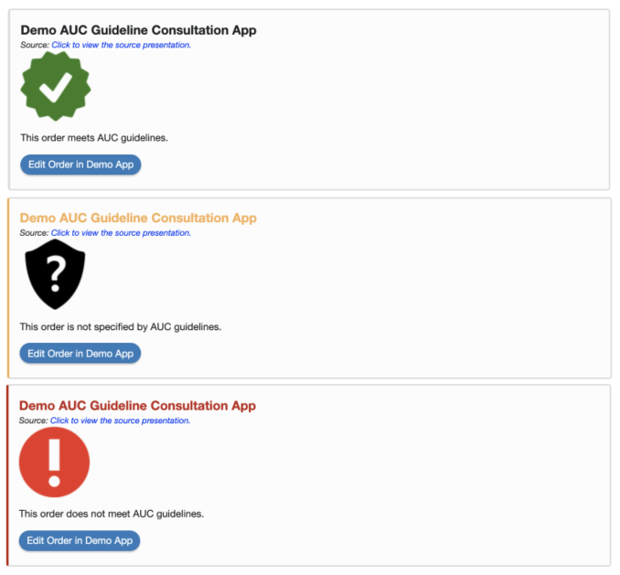
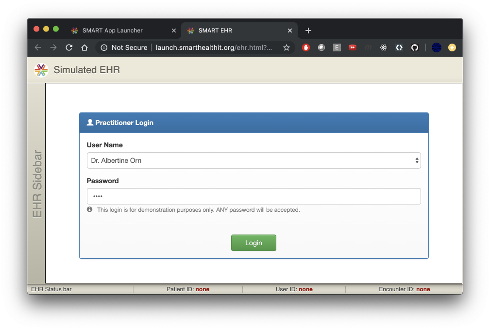
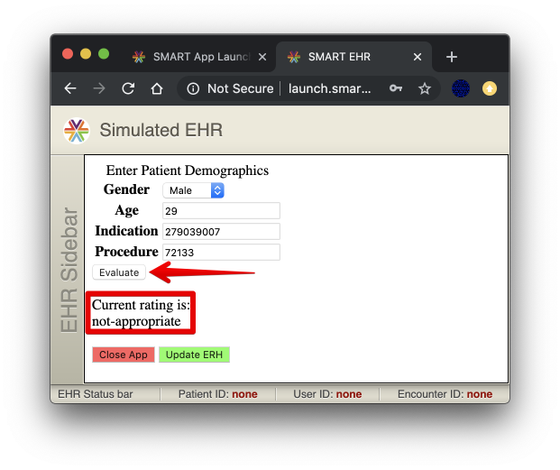

Welcome, student!
This codelab is intended to teach you about the SMART launch framework, CDS Hooks, and SMART Web Messaging by walking you through a coding exercise that uses those technologies.
Prerequisites
This guide assumes you are already familiar with javascript and are comfortable with web programming concepts. It also helps to know the basics of git, but there will be example commands throughout for convenience. The provided initial codebase uses javascript, node, nvm, npm, and express - so some prior experience with those tools will be helpful, but not required. JavaScript in the browser and in Node.js, and the express Web framework for Node.js
Contributing
As always, you are free to re-write entire portions of the code in whatever framework you like (and please feel free to share your work with us)!
The codelab has a wiki which should help you decide how to best contribute:
https://github.com/microsoft-healthcare-madison/demo-auc-app/wiki
Also, take notice of the Report a mistake link that appears in the lower left corner of each page!
Major Milestones
You will start with an already-implemented form-entry app that evaluates the appropriateness of a potential advanced imaging order and displays a rating of either appropriate, not-appropriate, or no-guidelines-apply.
- v1: Make the app SMART-launch capable, enabling an EHR to launch it.
- v2: Create a CDS Hooks service to evaluate a draft order in an EHR, and show a link to the SMART app.
- v3: Enable the SMART app to update the draft order inside the EHR.
PAMA - Protecting Access to Medicare Act of 2014
PAMA Imaging
New PAMA imaging requirements are taking effect, starting on January 1st, 2020. The American College of Radiology has put out some very helpful media to explain why this is important.
- https://www.acr.org/-/media/ACR/Files/Clinical-Resources/Clinical-Decision-Support/RSCAN-PAMA_flyer.pdf
- https://www.acr.org/Clinical-Resources/Clinical-Decision-Support
Timeline
2020 | Starting in 2020, providers in the US who order diagnostic advanced imaging (CT, MRI, nuclear medicine, and PET scans) will need to provide evidence that they have consulted best practice guidelines for appropriate use of that technology while they are still at the point of order entry. |
2021 | Failure to submit a claim for imaging that has this evidence, starting in 2021, may prevent reimbursement (for Medicare part B claims) for furnishing providers (who are typically radiologists). |
2022 | Ordering providers who have a consistently poor history of ordering "low value" diagnosic imaging may then be subject to mandatory prior authorization before placing image orders for Medicare patients starting in 2022. Some of those rules are TBD, depending on how the first two years go, though. |
Apropriate Use Criteria (AUC)
In short, for software to determine whether an imaging technique is apropriate or not for a given diagnosis, several groups of specialists have been developing apropriate use criteria and publishing that criteria for the industry to adopt into the EHR workflow. These AUC are regularly improved, updated, and re-published.
Provider Led Entities (PLE)
The groups of experts and specialists who decide what is and isn't appropriate are called Provider Led Entities. They develop the AUC out in the open and publish it reqularly for consumption by software vendors who provide CDS.
Qualified CDS Mechanisms (QCDSM)
The software providers who use this criteria, the QCDSM vendors, must provide access to best practice guidelines for a wide spectrum of medical care areas. For PAMA imaging, we are interested in the radiology imaging AUC and we have prepared a simple example of QCDSM guideline consultation software. However, a QCDSM must be able to use more than one published set of AUC in their software, and have a method of updating their AUC periodically (See pages 4 and 5 here for details). As such, the QCDSM software can be quite complex, and is often implemented as a stand-alone web service.
Frequently Asked Questions
Why are CDS Hooks important for PAMA?
Why is SMART Web Messaging important for PAMA?
You are provided with a very simple, but working, guideline consultation app. In PAMA parlance, this would be software from a Qualified CDS Mechanism, or a QCDSM.
Below is an embedded version of the app in its original state. The idea is that clinicians would use this tool alongside their EHR when consulting guidelines. The app would provide them some kind of evidence code which they could copy and paste back into the EHR before signing an order.
Feel free to explore the app to get a sense of how it works. Any non-empty username and password will allow you to use the app - the login is totally fake.
Interactive Demo AUC App
SMART Launch
You will add SMART launch capabilities to the app, allowing it to be launched by the EHR and to receive EHR data directly through the SMART launch client.
CDS Hooks
Once the app is capable of a SMART launch, you will write a CDS Hooks service to alert ordering providers when they have made an order selection that is outside of guidelines. The alert will give them a helpful link to click on, which will launch the app within the EHR. The app will read context from the EHR and use that to pre-populate the appropriate fields in its form, saving the clinician time and mental effort.
Example Cards

SMART Web Messaging
Finally, a new button will be added in the app that will be able to update the draft order items with the current selection. Upon update, evidence of guideline consultation will be attached to the order, before closing the app, returning the user to the order entry screen in the EHR.
Final Product
The final product will look something like this, when running embedded in an iframe in the EHR.

By clicking on the ‘Update EHR' button, the pending order will be modified to use whatever has been selected in the form. The iframe will then close and return the user to the EHR order entry screen.
Frequently Asked Questions
Which EHRs currently support the technologies required to enable these services?
You must have a development machine with the following:
| Needed to check out the initial codebase. | |
| RECOMMENDED to manage different installed versions of | |
| WINDOWS version of | |
| Needed to install the server dependencies and run it locally. |
Links
Frequently Asked Questions
Code Repository
The companion source code for this codelab is currently at:
https://github.com/microsoft-healthcare-madison/demo-auc-app
Clone v1.0
To begin this codelab, begin by cloning the repository at the initial version, which is v1.0.
mkdir ~/codelab
cd ~/codelab
git clone --branch v1.0 https://github.com/microsoft-healthcare-madison/demo-auc-app.git
cd demo-auc-app
npm install
The demo app is now ready to be started using this command:
npm run demo
To view the app, visit this URL: http://localhost:3001
Login
You can use any non-empty username and password to log in to the app.

EXERCISE
Frequently Asked Questions
I see this when trying to run the demo: npm ERR! code ENOENT
This site can't be reached.
This site can't provide a secure connection.
Error: listen EADDRINUSE: address already in use 0.0.0.0:8899
Problem
Solution
SMART Launch Documentation
There is a very handy javascript library to enable easy configuration of SMART launches from the app.
http://docs.smarthealthit.org/client-js/
EXERCISE 1
Here are a couple of hints, in case this seems like a vague request.
- You may need to use the
npmcommand to install the library. - Once installed, you will want to create an endpoint ‘page' for use in a browser using the ‘As Library' approach, rather than the ‘As Module' approach.
Scopes
More information about scopes can be found here.
http://www.hl7.org/fhir/smart-app-launch/scopes-and-launch-context/index.html
EXERCISE 2
Some hints:
- Consider using the
http-serverpackage fornpmfor a simple, easy to set-up, web server. - Add an entry to your
package.jsonfile so you can invokenpm run launchto run the launcher.
Success!
You should now be able to visit http://localhost:8899 to have it launch the app, bypassing the login screen.
The SMART App Launcher
To test the new launch endpoint, we can use a free, open source tool called the SMART App Launcher.
http://launch.smarthealthit.org/
EXERCISE
If it worked correctly, you should see the app launched within a mock EHR session and you should not have been prompted to enter a username and password. You should have been prompted to pick a provider and also pick a patient.



Notice
If you had configured your launch URL to have a pre-selected patient, you would not have seen the patient picker; instead, the patient name listed at the top and bottom edges of the Simulated EHR would have been filled in automatically using that patient. However, the age and gender would not automatically be populated in the form fields. We must first modify the HTML to do that, which will happen in the next section.
Frequently Asked Questions
I only see a white screen within the Simulated EHR panel.
I see an error: localhost sent an invalid response.
I was prompted with the original login screen.
I was not prompted to select either a patient or a provider.
Problem
Solution
EXERCISE 1
EXERCISE 2
EXERCISE 3 (BONUS)
Frequently Asked Questions
TODO: populate these as they are asked
Problem
Solution
Documentation
You can find lots of helpful information on CDS Hooks here:
- Home: https://cds-hooks.org
- HL7 Home: https://cds-hooks.hl7.org/
- Argonaut Home: https://github.com/argonautproject/cds-hooks
- CDS Hooks Tutorial: https://github.com/cerner/cds-services-tutorial
- Swagger API Definition: http://editor.swagger.io/?url=https://raw.githubusercontent.com/cds-hooks/api/master/cds-hooks.yaml
CDS Hooks Overview
Taken from: https://cds-hooks.org/
If you follow the overall flow of CDS Hooks in the diagram above, you can see how the EHR and the CDS Hooks service work together. But how does the EHR know about the CDS Hooks service?
You must understand several CDS Hooks concepts to make this service work as intended; however, the most logical starting-place is the CDS Hooks discovery endpoint.
Discovery
To run a CDS Hooks service, that service must provide a discovery endpoint which describes all the CDS Hooks that your service is interested in. In this case, we want the EHR to post a message to our service whenever the order-select hook is activated. This will allow the service to process the currently pending order selection and return the desired ‘card' data (which is then displayed by the EHR to the provider).
Documentation
You can read more details about the order-select hook here: https://cds-hooks.org/hooks/order-select/
EXERCISE
Frequently Asked Questions
TODO: populate these as they are asked
To test and develop your CDS Hooks service, it's recommended to use one of the several freely available sandboxes. One of the easiest to use is: http://sandbox.cds-hooks.org/.

EXERCISE 1
EXERCISE 2
EXERCISE 3
EXERCISE 4
Frequently Asked Questions
EXERCISE 2 - After selecting the top suggestion for congenital heart - I didn't see a card appear.
Problem
Solution
auc.js
The following can be loaded by both the app and the CDS Hooks service to determine the appropriateness rating of an order / diagnosis combination.
// File: auc.js
const CPT = {
_FHIR_CODING_SYSTEM: 'http://www.ama-assn.org/go/cpt',
CARDIAC_MRI: '75561',
CT_HEAD_NO_CONTRAST: '70450',
CTA_WITH_CONTRAST: '71275',
LUMBAR_SPINE_CT: '72133',
MRA_HEAD: '70544',
};
const SNOMED = {
_FHIR_CODING_SYSTEM: 'http://snomed.info/sct',
CONGENITAL_HEART_DISEASE: '13213009',
HEADACHE: '25064002',
LOW_BACK_PAIN: '279039007',
OPTIC_DISC_EDEMA: '423341008',
TOOTHACHE: '27355003'
};
class Criterion {
static covers(subset, set) {
if (subset.size > set.size) {
return false;
}
for (const member of subset) {
if (!set.has(member)) {
return false;
}
}
return true;
}
constructor(appropriate, notAppropriate) {
this.appropriate = appropriate.map(x => new Set(x));
this.notAppropriate = notAppropriate.map(x => new Set(x));
}
getRating(reasons) {
if (this.appropriate.filter(s => Criterion.covers(s, reasons)).length) {
return 'appropriate';
}
if (this.notAppropriate.filter(s => Criterion.covers(s, reasons)).length) {
return 'not-appropriate';
}
return 'no-guidelines-apply';
}
};
function evaluate(order, reasons) {
if (order) {
const criterion = criteria[order];
if (criterion && reasons.length) {
return criterion.getRating(new Set(reasons));
}
}
return 'no-guidelines-apply';
}
const criteria = {
'no-procedures-for': new Criterion([[SNOMED.TOOTHACHE]], []),
[CPT.CT_HEAD_NO_CONTRAST]: new Criterion([[SNOMED.HEADACHE, SNOMED.OPTIC_DISC_EDEMA]], []),
[CPT.MRA_HEAD]: new Criterion([], []),
[CPT.CTA_WITH_CONTRAST]: new Criterion([], [[SNOMED.CONGENITAL_HEART_DISEASE]]),
[CPT.LUMBAR_SPINE_CT]: new Criterion([], [[SNOMED.LOW_BACK_PAIN]]),
[CPT.CARDIAC_MRI]: new Criterion([[SNOMED.CONGENITAL_HEART_DISEASE]], []),
};
module.exports = {
CPT, SNOMED, criteria, evaluate, getRating: Criterion.prototype.getRating,
};
EXERCISE 1
EXERCISE 2 (BONUS)
Problem
Solution
Design
Recall the designed cards from the codelab introduction.
Documentation
You can find lots of information about CDS Hooks cards here:
- https://cds-hooks.org/#cds-cards
- https://cds-hooks.org/specification/current/#cds-service-response
- https://cds-hooks.org/specification/current/#card-attributes
A Head Start
The following code snippet will help you get started matching the look of the intended output.
Insert it into your CDS Hooks service code. With that in place, all you have to do is map appripriate (or the other ratings) to the custom card attributes needed to render the desired cards (some other generic attributes may also be needed, too).
const images = 'https://github.com/microsoft-healthcare-madison/demo-auc-app/tree/master/images/';
const cardDetails = {
'appropriate': {
detail: 'This order meets AUC guidelines.',
icon: images + 'appropriate.png',
indicator: 'success',
},
'no-guidelines-apply': {
detail: 'This order is not specified by AUC guidelines.',
icon: images + 'no-guidelines-apply.png',
indicator: 'warning'
},
'not-appropriate': {
detail: 'This order does not meet AUC guidelines.',
icon: images + 'not-appropriate.png',
indicator: 'critical',
},
};
EXERCISE 1
EXERCISE 2
Frequently Asked Questions
TODO: populate these as they are asked
Problem
Solution
Reference
Spend a few minutes reading the documentation to get a feel for how the appContext attribute can be added to the links in the CDS Hooks service.
EXERCISE 1
EXERCISE 2
EXERCISE 3
EXERCISE 4
Frequently Asked Questions
TODO: populate these as they are asked
Problem
Solution
Design
Recall the new app features that were introduced in the exercise outline.
In the final remaining sections of this codelab, you will implement several exercises to complete the missing functionality.
Missing Functionality
- The app needs to be able to inform the EHR that it is ‘all done' so the EHR knows it can close the iframe used to embed the app. This is essentially how the ‘cancel' button is implemented.
- The app needs to be able to update the current pending order based on whatever form values have been selected. When a final selection has been made, the user will click the ‘update' button to update the EHR and close the app.
- Because the app currently uses a form to POST to a remote service for determining AUC appropriateness, it becomes awkward when trying to implement functionality that will allow the user to ‘test out' various changes to order and diagnosis before updating the EHR. So, ideally, instead of POST'ing to a remote service, the form can invoke a javascript function which will take advantage of the new
auc.jsmodule.
Reference
Please refer to the SMART Web Messaging docs: https://github.com/smart-on-fhir/smart-web-messaging
EXERCISE 1
EXERCISE 2
EXERCISE 3
Frequently Asked Questions
TODO: populate these as they are asked
Button Panel
Add the following button panel to your index.html site. By default, the button frame will be disabled on load, but after the SMART client has been loaded, it will be made visible.
<div id='button_panel' style='display:none'>
<button id="close_btn" onclick='closeApp()' style='background-color: rgb(255, 95, 95);'>
Close App
</button>
<button id="update_btn" onclick='updateApp()' style='background-color: rgb(127, 255, 95);'>
Update EHR
</button>
</div>
...
function showButtons() {
document.getElementById('button_panel').style.display = 'block';
}
...
FHIR.oauth2.ready()
.then(getContext)
.then(populateForm)
.then(showButtons) // <- SHOW BUTTON PANEL!
.catch(console.error);
...
function closeApp() {
// TODO: implement this
}
function updateApp() {
// TODO: implement this
}
Closing the App
To enable the app-closing functionality, you should have identified in the previous section that you need the following in your app.
- The FHIR client must have requested the
messaging/uiscope upon launch. - The
postMessagefunction must be used to send aui.donemessage to the EHR.
In the following section we'll dig in to how sending messages can be done and implement the closeApp function.
Frequently Asked Questions
TODO: populate these as they are asked
In order to send messages to the EHR, the client code must do the following:
- Determine which window needs to receive the messages via
postMessage.- Use
window.parent.postMessagewhen the client is running embedded in aniframe. - Use
window.opener.postMessagewhen the client is launched into a separate browser.
- Use
- Generate a unique UUID per message.
- Provide the SMART Web Messaging Handle received from the server upon launch.
- Specify the
targetOriginof the destination EHR.
targetWindow
You can use the ternary operator to deduce the targetWindow.
const targetWindow = window.parent !== window.self ? window.parent : window.opener;
UUIDs
One potential library to use for generating UUIDs in your code is found here:
https://www.npmjs.com/package/uuid#quickstart—browser-ready-versions
This library provides this in-browser usage:
<script src="http://wzrd.in/standalone/uuid%2Fv4@latest"></script>
<script>
uuidv4(); // -> v4 UUID
</script>
SMART Web Messaging Handle
TODO(carl): update the master branch to have a correct implementation and reference it here.
targetOrigin
TODO(carl): update the master branch to have a correct implementation and reference it here.
EXERCISE 1
Frequently Asked Questions
TODO: populate these as they are asked
Problem
Solution
Design Goals
Recall that in the Exercise Overview section, the end-result screenshot of the app had renamed the ‘Submit' button to be ‘Evaluate'. Also, the appropriateness rating of the current selection was to be displayed on the app below the form fields.

Changes to index.html
Add the following changes to the existing app to enable using the AUC module within index.html and without requiring an external service to be available to answer requests.
<form id='auc_form' onsubmit="return evaluateFormContent()">
...
<input type="submit" value="Evaluate" />
</form>
...
<div>Current rating is:</div><div id='rating'>Waiting for data...</div>
...
<script>let module = {}; // HACK to allow in-browser import of auc.js</script>
<script src="auc.js"></script>
...
<script>
...
function showRating() {
document.getElementById('rating').innerText = getRating();
}
function evaluateFormContent() {
showRating();
return false; // <- prevent page refresh upon click.
}
function getRating() {
const order = document.getElementById('procedures').value;
const reasons = document.getElementById('indications').value;
return evaluate(order, [reasons]); // <- Use the AUC.evaluate function.
}
...
FHIR.oauth2.ready()
.then(getContext)
.then(populateForm)
.then(showRating) // <- NEW: DISPLAY THE RATING OF THE FORM ON LOAD
.then(showButtons)
.catch(console.error);
EXERCISE 1
EXERCISE 2 (BONUS)
Frequently Asked Questions
TODO: populate these as they are asked
Congratulations on making it to the final section!
Don't stop now! This is (probably) the most important piece of the puzzle, and once it's in place it really makes the whole user experience very seamless.
EXERCISE 1
EXERCISE 2
EXERCISE 3
EXERCISE 4
EXERCISE 5
EXERCISE 6
EXERCISE 7 (BONUS)
Frequently Asked Questions
TODO: populate these as they are asked
These are optional exercises that you are welcome to take on, if you chose.
auc.js
Update the logic to include more criteria.
App Client Refresh
When the app gets a token from the SMART launch API, that token eventually will timeout. The UI could give the user an option to request a refresh before it expires, or at least indicate in the UI when the token has expired (with a message like "EHR token has expired - please reload").
Frequently Asked Questions
What You'll Learn
- How to trigger the special syntax of a codelab, as processed by the
claattool. - What each special feature looks like.
- What You'll Learn
- Tables
- Infoboxes
- Surveys
- Download Button
- Embedded iframes
- Frequently Asked Questions
- What We've Covered
When you use the magic H3 heading ### What You'll Learn - the following unordered list will be rendered using green checkboxes instead of the default bullet points.
codelab markdown
### What You'll Learn
- hi
- there
Tables
Your codelab can use very simple markdown (or HTML) tables.
HTML-based
one | two | nine | thirteen |
three | four | ten | |
five | six | eleven | |
seven | eight | twelve |
Markdown-based
one | two | nine | thirteen |
three | four | ten | |
five | six | eleven | |
seven | eight | twelve |
codelab markdown
#### HTML-based
<table>
<tr><td>one</td><td>two</td><td>nine</td><td>thirteen</td></tr>
<tr><td>three</td><td>four</td><td>ten</td></tr>
<tr><td>five</td><td>six</td><td>eleven</td></tr>
<tr><td>seven</td><td>eight</td><td>twelve</td></tr>
</table>
#### Markdown-based
|-------|-------|--------|----------|
| one | two | nine | thirteen |
| three | four | ten | |
| five | six | eleven | |
| seven | eight | twelve | |
Infoboxes
You can highlight a section of code as either a positive or a negative infobox.
codelab markdown
<dt>positive</dt>
<p>This is a positive infobox.</p>
<dt>negative</dt>
<p>This is a negative infobox.</p>
Surveys
You can include a survey in the codelab which will create Google Analytics variables, which will collect survey response totals.
codelab markdown
<dl><dt style="background-color:#cfe2f3;">Survey</dt>
<dd>
<li>Example item 1</li>
<li>Example item 2</li>
</dd></dl>
IMPORTANT!
Download buttons
You can create a special button to Download something (like a tagged github repo).
Download v3.0
Embedded iframes
You can embed an iframe in a codelab by setting the alt attribute of an img element.
Example: embedded https://glitch.com/~howoldisit
codelab markdown

Frequently Asked Questions
- https://stackoverflow.com/questions/43001894/google-codelab-mistake
- https://developer.android.com/courses/fundamentals-training/toc-v2
When linking to stack-overflow (and a few other google-specific URLs) - the link icon is automatically inserted into the link.
codelab markdown
### Frequently Asked Questions
- <https://stackoverflow.com/questions/43001894/google-codelab-mistake>
- <https://developer.android.com/courses/fundamentals-training/toc-v2>
What We've Covered
- How to trigger the special syntax of a codelab, as processed by the
claattool. - What each special feature looks like.
- What You'll Learn
- Tables
- Infoboxes
- Surveys
- Download Button
- Embedded iframes
- Frequently Asked Questions
- What We've Covered
When you use the magic H3 heading ### What We've Covered - the following unordered list will be rendered using green checkboxes instead of the default bullet points.
codelab markdown
### What We've Covered
- good
- bye